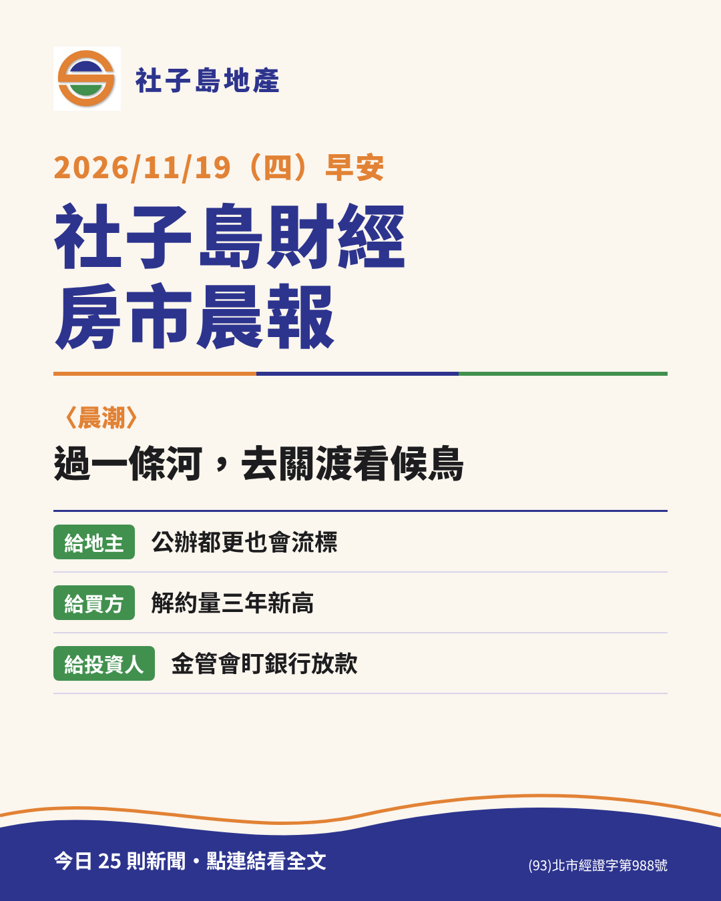

2026/11/19 (四) 早安
社子島財經房市晨報｜過一條河，去關渡看候鳥
今日 25 則財經與房市新聞，依主題分成 9 類，今天試新排法：主商圈 → 大台北 → 其他縣市（離台北由近到遠）→ 全國主題。點標題就能開啟原文。
〈潮汐表〉今天的三道潮水
- 給地主台南車站旁公辦都更基地首度流標，市府提高容積獎勵再招商；條件對不對，決定地有沒有人要。
- 給買方前十月全台預售屋解約4,678件、三年新高；簽約前先算清楚自己的貸款與付款能力。
- 給投資人金管會約談37家銀行，要求別卡首購自住房貸；台股18日尾盤翻紅，守住4萬點。
〈晨潮〉週邊三區
過一條河，去關渡看候鳥
昨天在濕地邊，阿公看著一群鳥往對岸飛，問我們：「聽講對面關渡有一个專門看鳥的所在，到底是佇佗位？啥物時陣去，看會著上濟？」阿公說的，就是臺北市關渡自然公園。從島頭望過去，淡水河對岸、關渡宮旁邊那一大片濕地就是。
什麼時候去？候鳥是跟著天氣來的。園區是國際鳥盟認定的重要野鳥棲地，每年秋天到隔年春天，是候鳥過境、留下來過冬的季節，現在正是時候。這幾天東北季風一波一波南下，天氣預報說週五晚上到週六清晨最冷，局部低到11度左右。想去的話，挑個不下雨的上午，外套帶厚一點。
幾點開門？依園區參觀須知，冬令期間（10月到隔年3月）平日上午9點到下午5點，假日開到5點半；每週一休園，平日下午4點半停止售票。門票分全票、優待票，買優待票要帶證件。票價與最新公告，出發前請以關渡自然公園官網為準。
到了看什麼？園區裡有3棟賞鳥小屋，可以隔著窗看核心保育區；自然中心2樓也有望遠鏡。冬天常看得到高蹺鴴、花嘴鴨、小水鴨。核心保育區不對外開放，請不要為了拍照走進管制區，讓鳥安心過冬。這段時間還有「2026關渡國際自然藝術季」，展到12月31日，看鳥順便看作品。
怎麼去？園方交通指引寫：搭捷運淡水信義線到關渡站，1號出口出站，走路約十多分鐘，也可以轉公車小23、紅35；搭302公車到「關渡國中」站，走約3分鐘。公車路線偶爾會調整，出門前用臺北市公車動態再查一次最穩當。
去關渡自然公園看鳥，先記這四件事
- ① 冬令開放 9:00～17:00，假日到 17:30；週一休園
- ② 秋冬到隔年春天是候鳥季，現在正是時候
- ③ 捷運關渡站 1 號出口，步行約十多分鐘
- ④ 核心保育區不開放，從賞鳥小屋看就好
鳥每年都回來，因為這片濕地一直被好好守著。社子島的濕地和關渡隔河相望，未來的規劃裡，河岸怎麼留給鳥、留給人，值得我們一起關心。往下滑，今天的新聞照新排法走：主商圈、大台北在前，其他縣市照遠近排，最後在〈廟口泡茶區〉等您來電。
——社子島地產團隊
主商圈：社子島・北士科・關渡洲美平原0 則
這兩天沒有選舉以外的新進度：社子島區段徵收計畫仍在內政部審議，北士科輝達總部依北市府13日說明持續推進，關渡洲美平原本週無新消息。今天〈晨潮〉帶您去對岸的關渡自然公園看候鳥
大台北：台北市・新北市・基隆7 則
天母一戶法拍豪宅7個月轉手、價差近1,500萬；大巨蛋帶動東區三站店面出租；中和預售屋3年漲26%、新舊屋價差拉大；鶯歌新案罕見4字頭；基隆老宅延壽補助第二階段18日起受理
其他縣市：桃園・台中・台南・高雄（離台北由近到遠）4 則
桃園華廈5年總價漲近8成；台中一案預售3個月完銷；台南車站旁6,800坪公辦都更基地首度流標，市府提高容積獎勵再招商；高雄建商1.18億收購停車場旁店面
全台房市・預售3 則
信義房屋統計，今年前十月全台預售屋解約4,678件、已超過前兩年全年，集中在桃園、台中、台南、高雄；業者認為解約率不到4%，房市回到「看個案」的時代
利率・房貸・資金3 則
金管會逐一約談37家國銀總經理，要求不得限縮首購、自住房貸與中小企業融資；銀行搶存款的連鎖效應受關注。美國房貸利率破7%，建商信心跌到14年半低點
稅務與法律實務3 則
地價稅11月30日截止，逾期每3天加徵1%滯納金；申請租金補貼不必房東同意；房子壞了自己修，碰到違建紅線也會受罰。實際以稅捐機關與主管機關公告為準
人口・高齡・家戶1 則
今年出生數跌破10萬，但永慶房屋指出近10年人口減少約24萬、家戶數卻增加129萬，小家庭帶動小坪數產品
交通建設與生活1 則
東北季風南下，今天北部白天約18、19度；週五入夜到週六清晨最冷，局部低溫約11度，週日白天回暖
今日財經大事3 則
台股18日盤中震盪1,677點，尾盤翻紅收漲102點、收40,194點；美股18日道瓊跌561點、那斯達克漲0.42%，輝達財報優於預期但股價收跌
〈阿公講古〉
週四早上，風比昨天更涼。阿公坐在坤天亭前的石椅上，手裡捧著一杯熱茶，看廟埕的老榕樹被風吹得沙沙響。
聽我們說完關渡自然公園的事，阿公點點頭：「早前對面攏是田佮爛塗，鳥仔愛來就來，嘛無人管伊。這馬有人專工顧，鳥仔才會逐年轉來。」
他喝了一口茶，又說：「人佮鳥仔仝款，所在顧予好，才會想欲轉來。」
停了一會兒，阿公想起前兩天的事：「福安碼頭的日頭落山，阮看幾十冬矣。聽講島頭公園，兩條溪仔做伙的所在，看日頭落山閣較媠。到底欲佇佗位看？啥物時陣去上適合？」
阿公的問題，我們明天回答。
〈廟口泡茶區〉
阿公從坤天亭慢慢走回廟口，熱茶剛好泡開。鳥會回來，是因為有人把地顧好；人想留下來，也是一樣的道理。
社子島區段徵收計畫還在內政部審議，抵價地、現金補償、安置怎麼選，每一家的情況都不一樣。先把自己家的地號、持分和使用現況整理好，有疑問，我們陪您一條一條看。
也想問問您：您從島上看過對岸的鳥嗎？最常看到的是哪一種？打個電話告訴我們。
不急著成交。我們是守在堤邊的人，守著每一塊土地的權益，直到把它交到願意耕耘它的人手上。
📞 歡迎先來電 0922-252-969先通個電話聊聊，再約時間來廟口喝茶。
 掃描 QR code，加 LINE 好友LINE ID：@shezidao💬 加 LINE
掃描 QR code，加 LINE 好友LINE ID：@shezidao💬 加 LINE
社子島地產團隊｜service@shezidao.com.tw
台北市士林區延平北路九段288號
週一至週六 9:30–18:00（週四 9:30–13:30），週日公休📞 來電 0922-252-969
本站由社子島地產開發有限公司經營，為民間不動產資訊網站，非臺北市政府官方網站；政府公告請以臺北市政府與地政局網站為準。
本期新聞由社子島地產團隊自經濟日報、聯合新聞網、自由時報地產天下、工商時報、中時新聞網、ETtoday房產雲、住展雜誌、鏡週刊、蕃新聞、Yahoo奇摩 等來源收集，標題照原文，點擊即可開啟原始報導；今日新聞依「主商圈 → 大台北 → 其他縣市（離台北由近到遠）→ 全國主題」試排。〈晨潮〉關渡自然公園開放時間、參觀規定與交通，參考臺北市關渡自然公園官網公開的參觀須知（2019年1月修正版）與到園交通指引，票價與最新公告請以官網為準；鳥種與賞鳥設施參考公開報導；天氣參考中央氣象署預報之媒體報導。〈晨潮〉〈阿公講古〉為本團隊之參考意見，不構成投資建議，亦不代表支持任何候選人。〈阿公講古〉的阿公，是我們依島上長輩的身影寫成的人物。